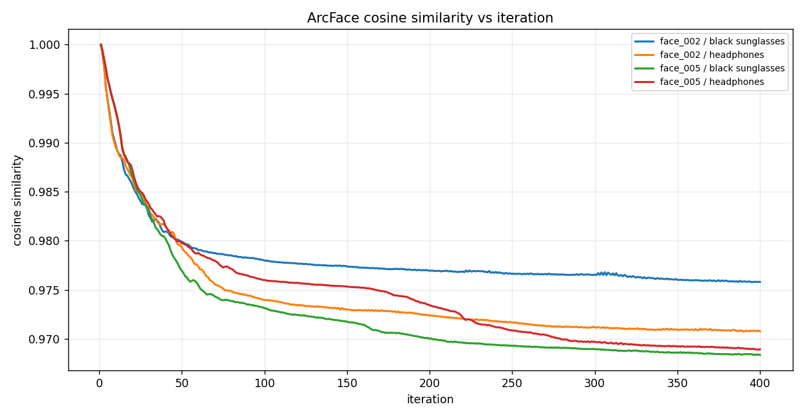
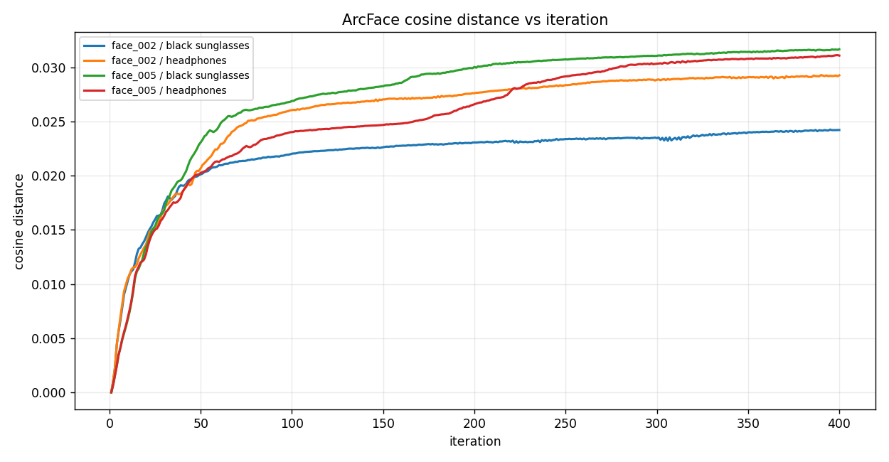
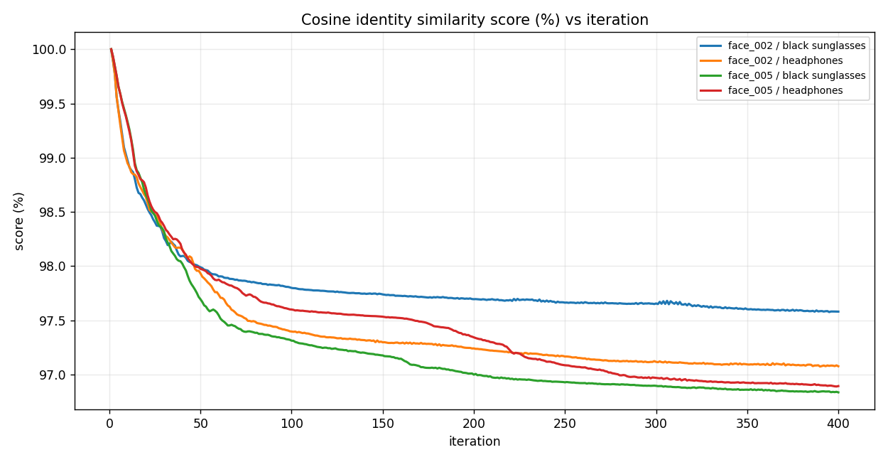
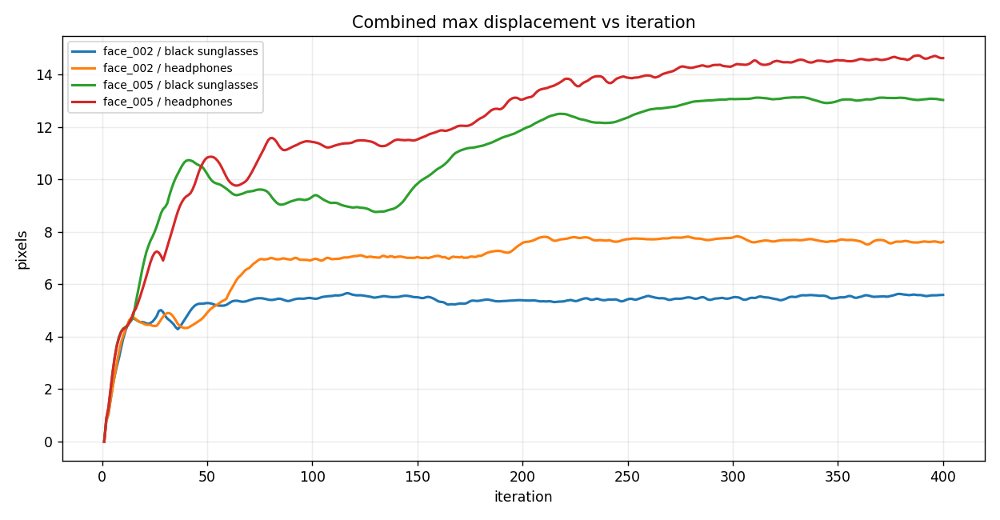
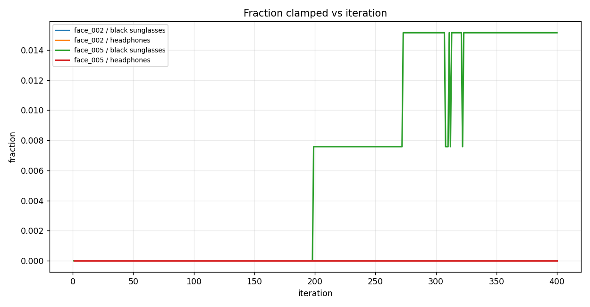
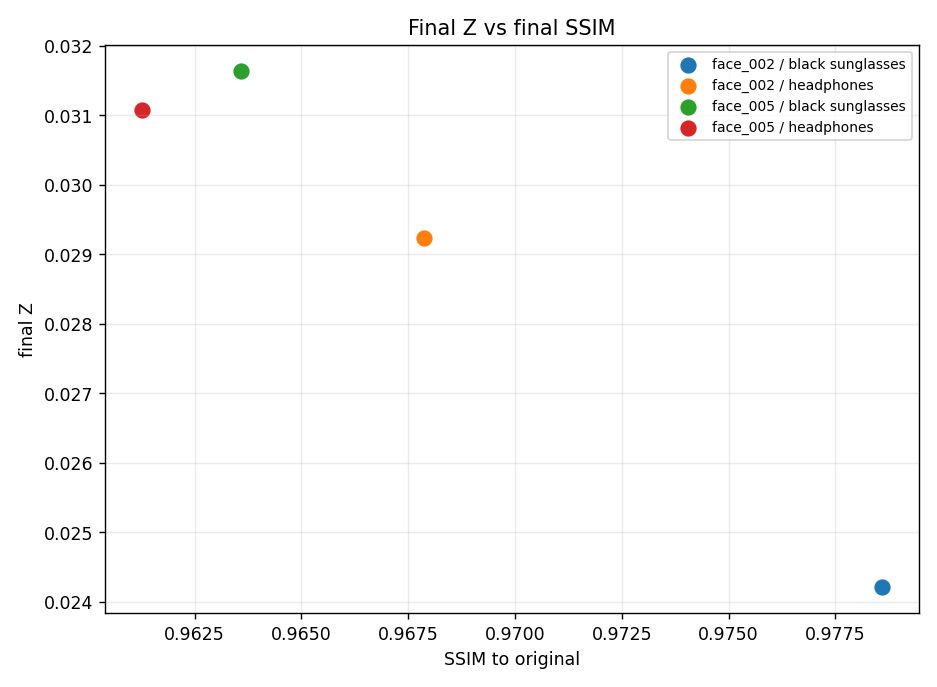
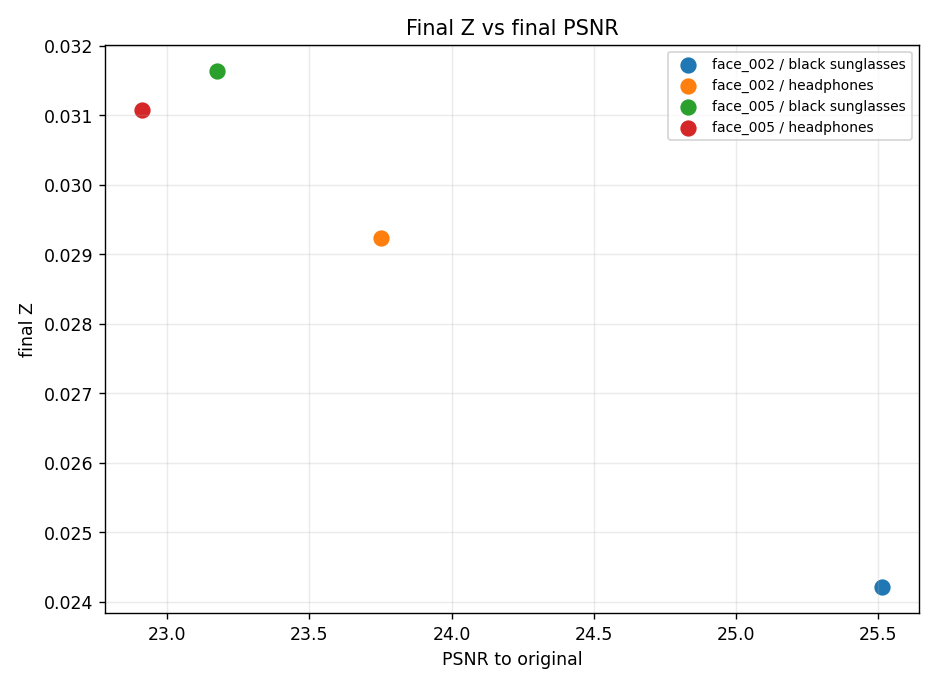
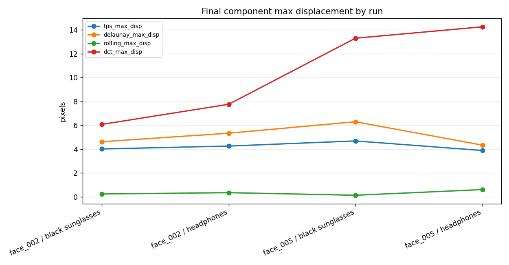

FACE: ArcFace White-box Geometric Identity Optimization
Frozen iResNet-100 identity-distance results with downstream InstructPix2Pix evaluation
Author: Parth Katiyar
FACE optimizes Z = 1 - cosine_similarity between original and perturbed full-image ArcFace iResNet-100 embeddings. The loss is exactly loss = -Z. ArcFace weights are frozen; only geometry parameters are optimized. No landmarks, face detection, alignment, visual counter-loss, VAE objective, or UNet objective is used.
1. Run matrix
Four prompt-labeled cases are retained for compatibility. The ArcFace objective is not prompt-conditioned; prompts are used only for downstream InstructPix2Pix edit evaluation.
| face | prompt | final Z | best Z | ArcFace cosine sim | cosine score % | SSIM | PSNR | edit output SSIM | max disp px | fraction clamped |
|---|---|---|---|---|---|---|---|---|---|---|
| face_002 | add black sunglasses | 0.0242 | 0.0242 | 0.9758 | 97.580 | 0.9786 | 25.512 | 0.6861 | 5.5964 | 0.0000 |
| face_002 | add headphones | 0.0292 | 0.0293 | 0.9708 | 97.077 | 0.9679 | 23.752 | 0.6030 | 7.6190 | 0.0000 |
| face_005 | add black sunglasses | 0.0316 | 0.0317 | 0.9684 | 96.836 | 0.9636 | 23.174 | 0.6932 | 13.032 | 0.0152 |
| face_005 | add headphones | 0.0311 | 0.0311 | 0.9689 | 96.892 | 0.9613 | 22.914 | 0.6513 | 14.629 | 0.0000 |
2. Case image strips
face_002 — add black sunglasses

outputs/arcface_identity/20260703_100609_arcface_identity_all_sequential/runs/arcface_identity/arcface_iresnet100/face_002__add_black_sunglasses
face_002 — add headphones

outputs/arcface_identity/20260703_100609_arcface_identity_all_sequential/runs/arcface_identity/arcface_iresnet100/face_002__add_headphones
face_005 — add black sunglasses

outputs/arcface_identity/20260703_100609_arcface_identity_all_sequential/runs/arcface_identity/arcface_iresnet100/face_005__add_black_sunglasses
face_005 — add headphones

outputs/arcface_identity/20260703_100609_arcface_identity_all_sequential/runs/arcface_identity/arcface_iresnet100/face_005__add_headphones
3. Graphs


{kind=link}

{kind=link}

{kind=link}



{kind=link}

{kind=link}

{kind=link}

{kind=link}

{kind=link}

4. Notes
- Completed runs collected: 4.
- Run root: outputs/arcface_identity/20260703_100609_arcface_identity_all_sequential
- Missing artifacts recorded: 0.